Round OX. Mockups only, nothing in atuned_src is touched. Every picture is the built app (source.html) with the readings emptied out of the left rail and one block put in the same place. Every figure is read from the engine. Each block is alive from its first frame.
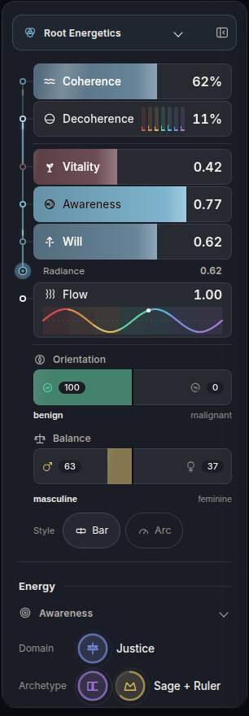
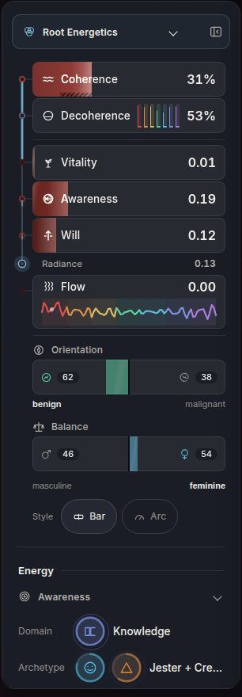
Where the shared grammar sits, the same in all three:
A pill bar, coherence filling from the left, the seam softening into a dark ground that carries the seven marks. Under it four liquid gauges and the balance beam, under those the wave.
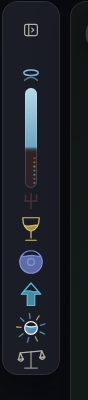
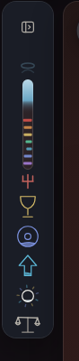
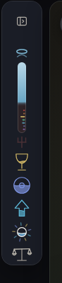
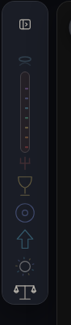
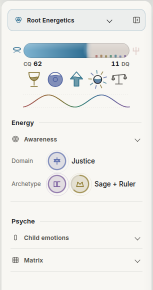
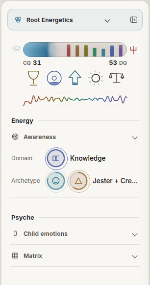
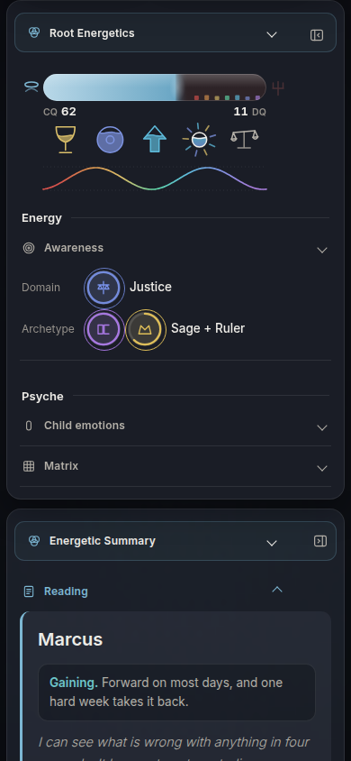
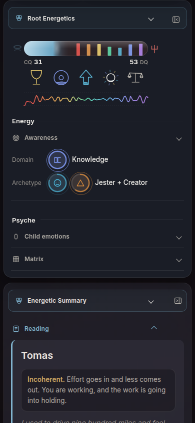
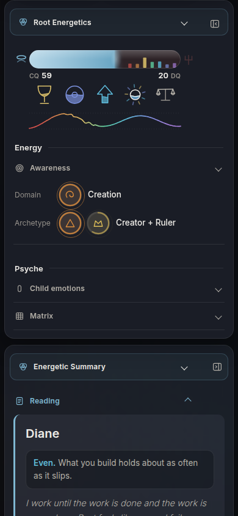
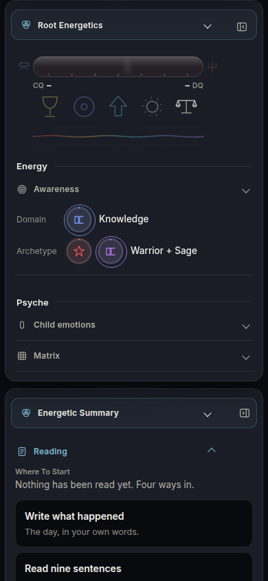
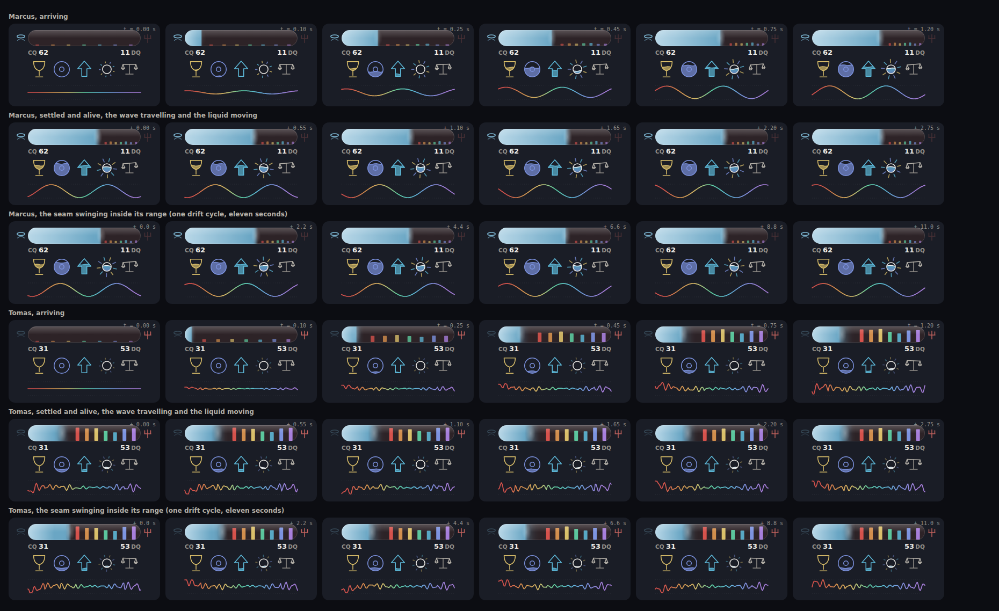
What a person reads at a glance. How far the light reaches along the bar and how soft its edge is. Whether the dark end is empty or standing tall with colour, and which seat is tallest. Which of the three element glyphs are full. Whether the wave is one clean sine or torn. Halo or pitchfork. Which pan of the beam is down.
Height it takes. 138 px, 154 with margin, against 617 today. The archetype and domain rows end at y 522 instead of y 997, so they clear the first screen with 478 px to spare.
Where it is weak. The five glyphs are the smallest marks in the set (38 px) and a near empty gauge, Tomas's Vitality at 0.01, is an empty cup: true, and it looks like a missing icon. The dark end of the bar sits 1.11 to 1 against the panel, so it is carried by its hairline and its marks, and a person at CQ 97 has almost no dark end to see.
A three hundred degree gauge, coherence sweeping clockwise from the lower left, the dark ground and the seven marks in the rest, the seam as a blended arc. The wave is the ring's own edge. Inside, three lamps whose light adds, and a small sun where they meet.
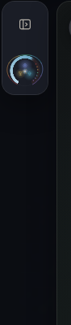
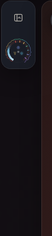
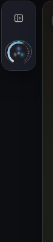
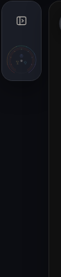
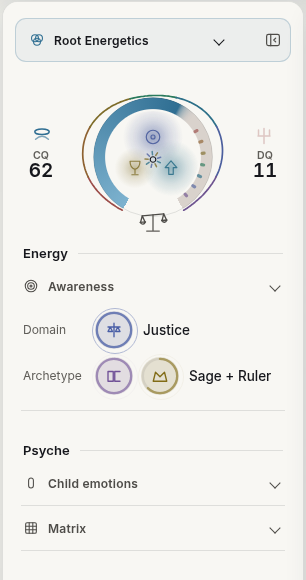
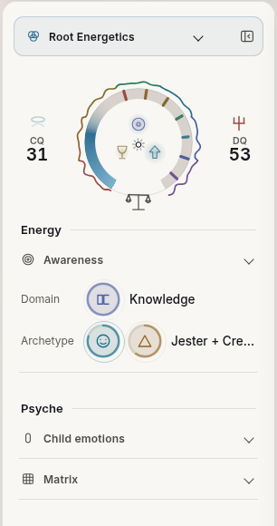
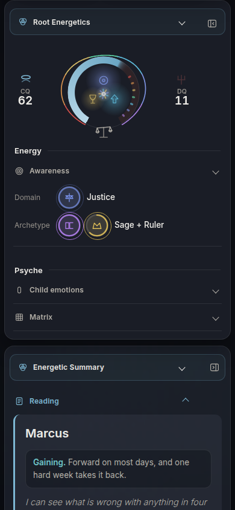
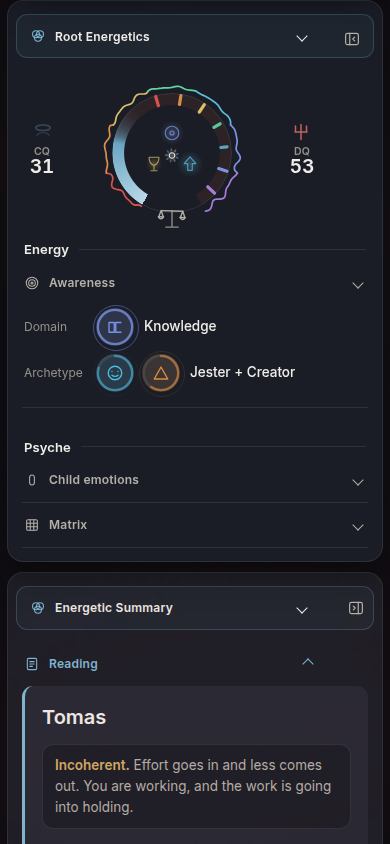
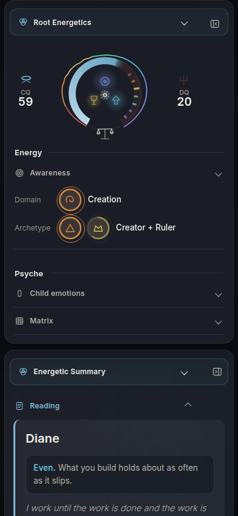
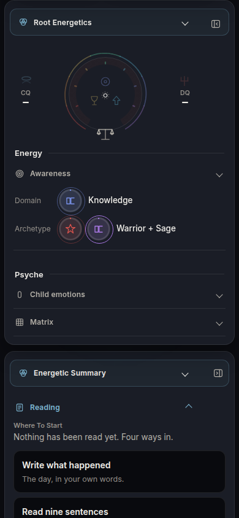
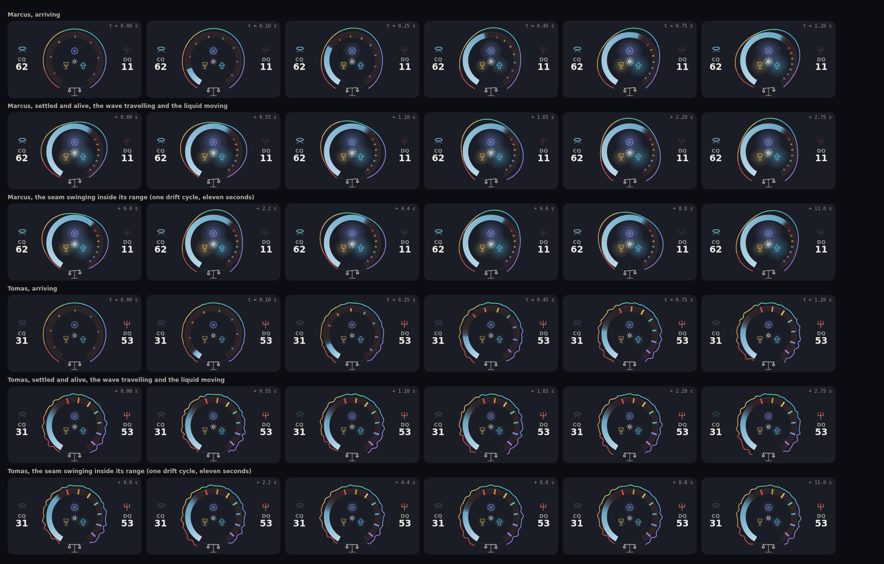
What a person reads at a glance. The shape first: a smooth round ring is a field that flows, a ragged one is not. Then how much of the ring is light and how much is shadow, with the seven colours standing in the shadow. Halo or pitchfork at the side, a beam under it. Inside, how much the three lamps overlap: a bright meeting point is high radiance, three separate dim lamps are not.
Height it takes. 146 px, 162 with margin. Domain and archetype end at y 530.
Where it is weak. It is the prettiest and the hardest to read exactly. The three glyphs are 18 px and sit inside soft light, so which lamp is the weak one is a guess until you hover. The seam on a high CQ is a hairline and is not seen. It leaves 60 px of empty margin either side of the ring at this width.
The Compass's own geometry made small. Coherence rises like mercury from the pitchfork toward the halo, the dark ground and the seven marks above it. Beside it the wave runs up the body, and the three elements are three thin tubes ending in their own bulb, with the sun above them.
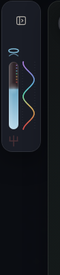
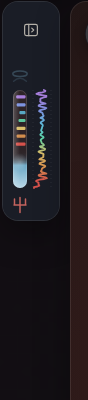
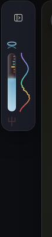
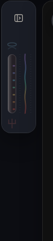
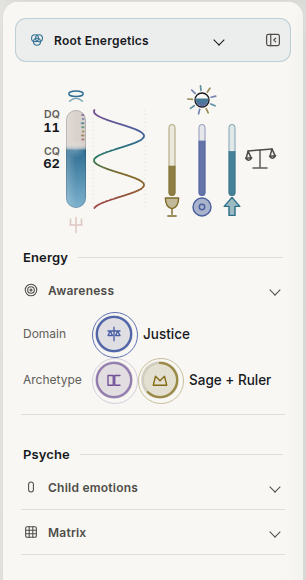
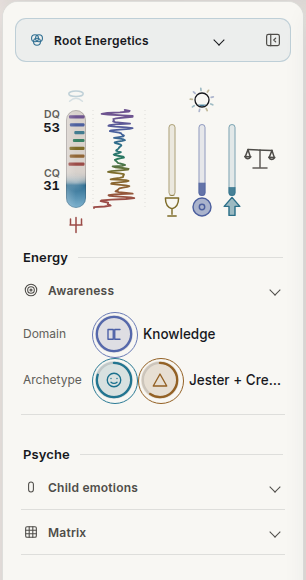
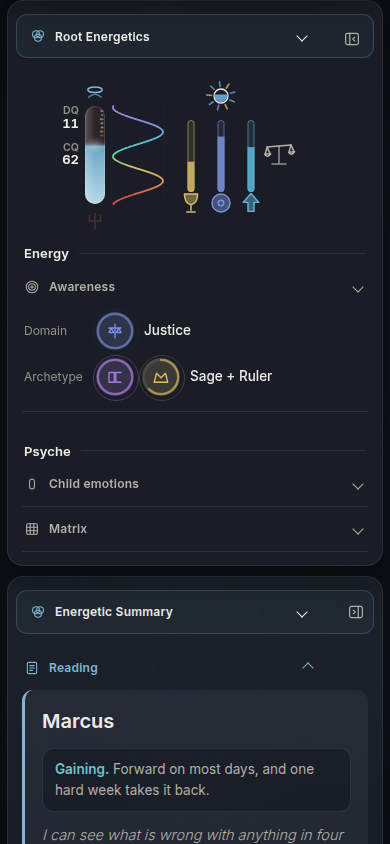
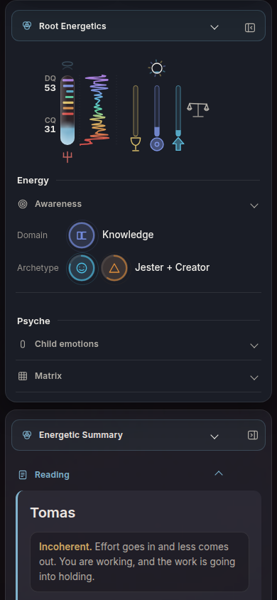
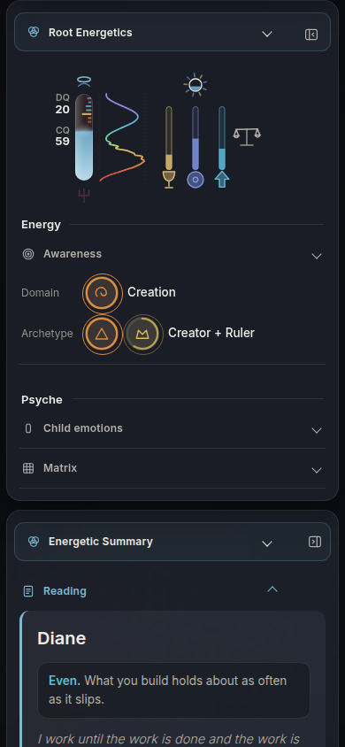
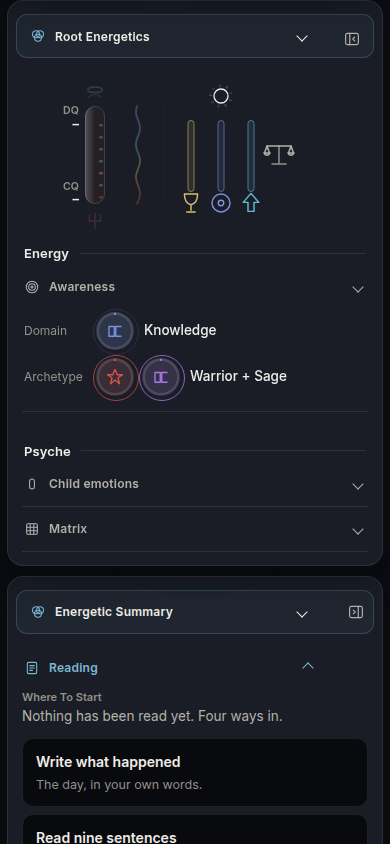
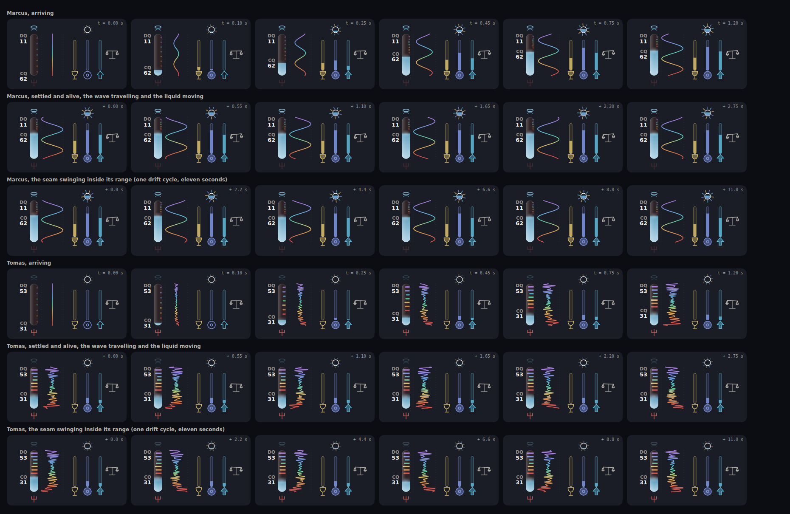
What a person reads at a glance. How high the light stands in the tube and where the seam sits, the colours stacked above it, and the wave beside it sharing the same seven heights. Three thin tubes: how full each element is. The sun above them: how much the three add up to.
Height it takes. 150 px, 166 with margin. Domain and archetype end at y 534.
Where it is weak. It is the most parts: spine, wave, three tubes, sun, beam, two labels. The element tubes have no relation to the spine except that they stand beside it, so the eye reads two instruments. The two labels stack close to each other when CQ is high. It is the only one whose closed form is the open object, cut down, and the one that borrows the Compass most directly.